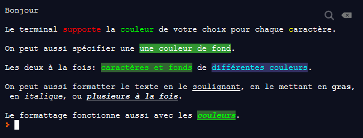

✏️ TP 8 - Boutique niv.1 ✔️
Dans ce TP on va s'entraîner sur les dictionnaires en Python.
On va créer une petite application de boutique en ligne pour un marché. Voici le résultat final qu'on souhaite avoir:
L'application prend aussi en charge les erreurs suivantes:
Ajout d'un article dans le panier: code de produit inexistant ↓
Ajout d'un article dans le panier: quantité de produit insuffisante (<= 0) ↓
Ajout d'un article dans le panier: quantité de produit pas un nombre entier (exception de type
ValueErrorlors de la conversion enint) ↓Ajout d'un article dans le panier: argent insuffisant ↓
Suppression d'un article du panier: code de produit inexistant dans le panier ↓
Remarquez que les erreurs:
- sont affichées en jaune
- commencent toujours par le symbole ⚠
- font une pause de 2 secondes avant de laisser le programme se poursuivre
Remarquez aussi que les messages de confirmation sont:
- en vert
- commencent toujours par le symbole ✓
- ne provoquent pas de pause
On peut mettre dans notre code Python et afficher des émoticones (appelés aussi émojis). Vous aurez besoin des caractères unicodes suivants (copiez-collez dans votre code): 👩🌾 🍎 🍐 🍊 👩🍳 🍩 🍪 🍰 🧔⚓ 🦀 🦐 🐟 🏪 💰 🛒. Vous pouvez aussi utilisez ceux que vous voulez (pour une boutique avec des produits et vendeurs de votre choix) en visitant certains sites (comme celui-ci) qui listent tous les émojis existants.
Vous pouvez aborder cet exercice différemment selon votre niveau ou le challenge que vous souhaitez.
Difficulté élevée
Faites tout l'exercice comme vous le souhaitez, sans suivre aucune indication de ma part. Tant qu'il fonctionne exactement comme dans les exemples, ça sera considéré correct. Vous avez en bas de cette page les explications pour avoir de la couleur dans la console.
Difficulté normale
Je vous donne des instructions pas à pas. Ma version fait 200 lignes, cela vous donne une idée de la longueur du programme final.
- Commencez par déclarer les vendeurs dans une variable globale de type dictionnaire. Chaque vendeur est identifié dans le dict par son prénom, et a les informations suivantes associées: un portrait (str), un métier (str), et des produits (dict). Chaque produit d'un vendeur est identifié par un code, et a les informations suivantes associées: un nom complet (str), un prix à l'unité (int ou float), et une icône (str).
Ecrivez une fonction, qui ne prend aucun paramètre, qui ne retourne aucun résulat, qui sait afficher la boutique comme dans la vidéo d'exemple, c'est à dire la liste des produits pour chaque vendeur, avec toutes les infos nécessaires proprement affichées. Restez générique, votre fonction doit fonctionner peu importe le nombre de vendeurs et de produits par vendeurs.
Testez votre fonction
- Déclarez une variable globale pour le panier du client (dict) vide pour commencer, ainsi que pour son argent (int ou float). Donnez une somme de départ au client (5000 par exemple). Dans le dictionnaire du panier, on aura les codes des produits comme clés, uniquement pour les produits qui sont dans le panier. Et pour les valeurs associées aux clés, on aura 2 informations: la quantité du produit en question identifié par la clé (int), et l'objet produit original, le même exactement que ceux déclarés et stockés dans la liste des vendeurs et produits. Ainsi, depuis le panier, pour chaque code de produit, vous aurez accès à la fois à la quantité du produit, et au produit original, duquel vous pourez obtenir des infos utiles pour l'affichage, comme le nom, le prix, et l'icône du produit.
Ecrivez et testez les fonctions suivantes:
Une fonction qui sait retrouver un produit dans le dict des vendeurs, à partir d'un code donné en paramètre (str). Elle retourne l'objet produit en lui-même, c'est à dire un objet de type dict (étant donné que chaque produit dans la liste des vendeurs est un dict identifié par un code de type str).
Une fonction qui sait ajouter une certaine quantité d'un article dans le panier. Elle prend deux paramètres: le code du produit à ajouter (str), et la quantité (int). Elle met aussi à jour l'argent, en enlevant la bonne somme du total d'argent dont dispose le client!! Elle fait ce qu'il faut et retourne 0 si tout s'est bien passé. Elle ne fait rien et retourne 1 si le produit spécifié n'existe pas, 2 s'il n'y a pas assez d'argent, 3 si quantité est 0 ou négatif.
Une fonction qui sait supprimer un article du panier du client, à partir du code du produit passé en paramètre (str). Là encore, elle met bien à jour l'argent, en rajoutant la bonne somme au total d'argent dont dispose le client!! Elle fait ce qu'il faut et retourne 0 si tout s'est bien passé. Elle ne fait rien et retourne 1 si le panier ne contient pas le produit spécifié.
Une fonction qui sait afficher le panier du client et son argent disponible, comme dans la vidéo d'exemple. Aucun paramètre, aucune valeur de retour.
Une fonction qui sait afficher un message d'erreur comme dans la vidéo d'exemple. Un seul paramètre, le message (str). Aucune valeur de retour.
Une fonction qui sait afficher un message de confirmation comme dans la vidéo d'exemple. Un seul paramètre, le message (str). Aucune valeur de retour.
Dans une boucle, vous devez:
- afficher la boutique, le panier, les actions possibles
- demander au client ce qu'il / elle souhaite faire
- déclencher la bonne action selon son choix, et afficher les bons messages de confirmation et d'erreurs
- si le client souhaite quitter, vous devez stopper la boucle d'une manière ou d'une autre
Quelques indices:
- Pour faire une pause d'un certain nombre de secondes lors de l'exécution de votre programme, vous pouvez utiliser une fonction du module time. Trouvez la fonction qu'il vous faut dans ce module.
- On utilise principalement les
dictpour stocker les informations nécessaires. - Dans le cours est expliqué comment de l'intérieur des fonctions on peut manipuler les variables globales, vous en aurez besoin.
- Vous aurez besoin de savoir utiliser les couleurs dans la console (voir plus bas).
- Vous devez bien nommer vos variables et vos fonctions, afin qu'elles soit explicites, sinon vous vous perdrez dans votre propre code. Il vaut mieux des identifiants longs maix explicites, que courts mais obscurs.
- Pareil pour nommer les clés dans vos dictionnaires, sinon vous vous perdrez dans votre propre code.
- Construisez votre programme petite étape par petite étape. Ecrivez un peu de code, et testez-le sans trop attendre. N'hésitez pas non plus à mettre le programme dans des états intermédiaires lorsque vous le développez, pour ne pas perdre du temps. Par exemple, ajoutez quelques produits dans le panier du client, en appelant vos fonctions. Ainsi vous verrez dès le départ si vos fonctions fonctionnent bien.
# Pour la console originale Windows uniquement, inutile pour le Terminal de Windows
# import os
# os.system("color")
import time
vendeurs = {
'Susie': {
'portrait': "👩🌾",
'métier': 'Agricultrice',
'produits': {
'pom': {
"nom": 'Pommes import NZ',
"francs à l'unité": 50,
'icone': "🍎",
},
'poi': {
"nom": 'Poires import NZ',
"francs à l'unité": 70,
'icone': "🍐",
},
'ora': {
"nom": 'Oranges locales',
"francs à l'unité": 110,
'icone': "🍊",
}
}
},
'Julie': {
'portrait': "👩🍳",
'métier': 'Pâtissière',
'produits': {
'd': {
"nom": 'Donuts sauce choco',
"francs à l'unité": 150,
'icone': "🍩",
},
'c': {
"nom": 'Cookies aux pépites de chocolat',
"francs à l'unité": 200,
'icone': "🍪",
},
'g': {
"nom": 'Parts de gateau crème fraîche',
"francs à l'unité": 170,
'icone': "🍰",
}
}
},
'Thomas': {
'portrait': "🧔⚓",
'métier': 'Pêcheur',
'produits': {
'cra': {
"nom": 'Crabes de mangrove',
"francs à l'unité": 700,
'icone': "🦀",
},
'cre': {
"nom": 'Crevettes moyennes',
"francs à l'unité": 150,
'icone': "🦐",
},
'bec': {
"nom": 'Becs de canne',
"francs à l'unité": 450,
'icone': "🐟",
}
}
},
}
def afficher_produits():
print('Bienvenue au marché 🏪, voici nos vendeurs:')
# print()
for nom_vendeur, description_vendeur in vendeurs.items():
print(description_vendeur['portrait'] + ' ' + nom_vendeur + ' (' + description_vendeur['métier'] + ') vend:')
for code_produit, description_produit in description_vendeur['produits'].items():
desc_produit_str = '\t' + description_produit['icone'] + ' ' + description_produit['nom']
desc_produit_str += ' (code: ' + code_produit + '), ' + str(description_produit["francs à l'unité"]) + ' F/unité'
print(desc_produit_str)
panier_client = {}
def retrouver_produit(code_produit_à_retrouver):
for nom_vendeur, vendeur in vendeurs.items():
for code_produit, produit in vendeur["produits"].items():
if code_produit == code_produit_à_retrouver:
return produit
argent = 5000
# retourne 0 si tout s'est bien passé, 1 si le produit spécifié n'existe pas, 2 s'il n'y a pas assez d'argent, 3 si quantité est 0 ou négatif
def ajouter_articles_dans_panier(code_produit_à_ajouter, quantité):
if quantité <= 0:
return 3
produit_à_ajouter = retrouver_produit(code_produit_à_ajouter)
if not produit_à_ajouter:
return 1
global argent
prix_produit = produit_à_ajouter["francs à l'unité"] * quantité
if prix_produit > argent:
return 2
argent -= prix_produit
if code_produit_à_ajouter not in panier_client:
panier_client[code_produit_à_ajouter] = {
'produit': produit_à_ajouter,
'quantité': quantité
}
else:
panier_client[code_produit_à_ajouter]['quantité'] += quantité
return 0
# retourne 0 si tout s'est bien passé, 1 si le panier ne contient pas le produit spécifié
def supprimer_produit_du_panier(code_produit_à_supprimer):
if code_produit_à_supprimer not in panier_client:
return 1
argent_récupéré = panier_client[code_produit_à_supprimer]["produit"]["francs à l'unité"] * panier_client[code_produit_à_supprimer]["quantité"]
global argent
argent += argent_récupéré
del panier_client[code_produit_à_supprimer]
return 0
def afficher_panier():
print('\x1b[38;2;255;255;100;48;2;100;100;100m'"💰 Vous disposez de:", str(argent), 'F', '\x1b[0m')
if len(panier_client) == 0:
print("🛒 Votre panier est vide")
else:
print("🛒 Votre panier contient:")
for code_produit, produit in panier_client.items():
print((produit['produit']['icone'] + ' ') * produit['quantité'], str(produit['quantité']), produit['produit']['nom'])
# ajouter_articles_dans_panier('cra', 2)
# ajouter_articles_dans_panier('pom', 4)
def afficher_message_erreur(msg):
print('\x1b[38;2;255;255;0m⚠', msg, '\x1b[0m')
time.sleep(2)
def afficher_message_confirmation(msg):
print('\x1b[38;2;0;255;0m✓', msg, '\x1b[0m')
réponse_utilisateur = ''
while True:
afficher_produits()
afficher_panier()
print("Que voulez-vous faire?")
print("- a pour ajouter des articles au panier")
print("- r pour rendre des articles")
print("- q pour confirmer votre commande et quitter la boutique")
réponse_utilisateur = input()
if réponse_utilisateur == 'a':
code_produit = input("Code produit: ")
quantité = input("Quantité: ")
try:
quantité = int(quantité)
except ValueError:
afficher_message_erreur("Veuillez entrer un nombre entier pour la quantité.")
continue
résultat = ajouter_articles_dans_panier(code_produit, quantité)
if résultat == 1:
afficher_message_erreur('Le code produit "' + code_produit + '" n\'existe pas.')
elif résultat == 2:
afficher_message_erreur("Vous n'avez pas assez d'argent pour en acheter autant.")
elif résultat == 3:
afficher_message_erreur('Quantité insuffisante')
elif résultat == 0:
afficher_message_confirmation("Vos produits ont été ajoutés à votre panier")
elif réponse_utilisateur == 'r':
code_produit = input("Code produit: ")
résultat = supprimer_produit_du_panier(code_produit)
if résultat == 1:
afficher_message_erreur('Le code produit "' + code_produit + '" n\'existe pas dans votre panier.')
elif résultat == 0:
afficher_message_confirmation("Vos produits ont été supprimés de votre panier")
elif réponse_utilisateur == 'q':
afficher_message_confirmation("Vous recevrez bientôt votre commande. Merci pour votre visite!")
break
De la couleur dans le terminal
La console, qu'on appelle aussi terminal, supporte la couleur dans la majorité des systèmes d'exploitation.
Affichage dans la console ↓
Voici comment on spécifie la couleur sur la ligne après "Bonjour":
print("Le terminal \x1b[38;2;255;0;0msupporte\x1b[0m la
\x1b[38;2;0;255;0mcouleur\x1b[0m de votre choix pour
chaque \x1b[38;2;255;255;0mc\x1b[0maractère.")
Cela peut effrayer au premier abord, mais le format est logique une fois qu'on le comprend. Tout se trouve dans un chaîne de caractères, donc entre deux
" ou '. Puis chaque portion du texte qu'on souhaite colorier/formatter est entourée entre quelque chose qui commence par
\x1b et se termine par m.
Par exemple le mot "supporte" est entouré par \x1b[38;2;255;0;0m à gauche, et \x1b[0m à droite. Chaque partie ne sera pas
affichée mais interprétée par Python, car elles spécifient le format du texte qui suit, donc le texte à droite du format. Ce format sera actif dans le
terminal tant qu'aucun autre format ne sera spécifié, même après que notre programme Python soit terminé! \x1b[38;2;255;0;0m spécifie que
la couleur du texte qui suit doit être rouge. \x1b[0m spécifie que le texte qui suit ne doit avoir aucune couleur ou format en particulier,
comme une réinitialisation.
\x1b marque le début de l'information de formatage, en Python \x est un caractère spécial, tout comme \n.
\x permet de spécifier un caractère par son code ASCII hexadécimal, c'est à dire en base 16. En base 10 les chiffres vont de 0 à 9, tandis qu'en base 16, ils vont de 0
à f (16 chiffres au total). Le caractère est 1b soit 27 en décimal. C'est le numéro du caractère spécial qui nous permet de spécifier le
format du texte si celui-ci est suivi par le caractère [, c'est ainsi, par convention. \x1b est donc interprété par Python
comme un seul caractère au final, et ensuite un format spécial doit suivre.
Ce format commence par [ et se termine par m. Entre ces deux caractères, plusieurs informations peuvent être présentes, selon
nos besoins. Chaque information est séparée par un ;. Par exemple la couleur du texte peut être spécifiée en même temps que la couleur de
fond du texte, ces deux informations doivent être séparées par un point-virgule.
La couleur du texte est donnée par le format 38;2;rouge;vert;bleu, avec les valeurs pour rouge, vert, bleu qui doivent être entre 0 et 255.
Par exemple 38;2;255;0;0 est 100% rouge, 38;2;0;255;0 est 100% vert, et 38;2;0;0;255 est 100% bleu. Les
combinaisons donnent toute la gamme de couleur. Par exemple 38;2;255;255;0 est jaune, et 38;2;0;255;255 est cyan. Remarquer
que les début est toujours 38;2;, c'est le code qui spécifie que ce qui va suivre doit être les 3 valeurs rouge vert et bleu.
Sur le même principe, la couleur de fond du texte est donnée par 48;2;rouge;vert;bleu. C'est la même chose, mais le code du départ est
48;2.
Pour souligner le code est 4 (par exemple \x1b[4m), pour le gras c'est 1 et pour l'italique c'est 3.
Les combinaisons se font encore en séparant les informations par des points-virgules. Par exemple \x1b[4;1m spécifie que le texte qui
suivra sera en gras ET souligné.
On peut spécifier la couleur et le formatage à la fois de la même manière. Avec \x1b[4;38;2;255;0;0m par exemple, le texte qui suit sera
rouge et souligné.
L'ordre des informations de formatage n'a pas d'importance, par exemple
\x1b[4;1m et
\x1b[1;4m
font la même chose, tout comme
\x1b[4;38;2;255;0;0m et
\x1b[38;2;255;0;0;4m
Pour récapituler
- Le formatage démarre toujours par
\x1b[OPTIONS m
avecOPTIONSqui sont des codes à spécifier. Le texte qui suit sera formatté comme demandé. -
OPTIONSpossibles:0: réinitialise toutes les options, donc le texte qui suit sera normal4: texte souligné1: texte en gras3: texte en italique38;2;r;v;b: spécifie la couleur du texte.r,vetbdoivent être dans l'intervalle [0,255]48;2;r;v;b: spécifie la couleur de fond du texte.r,vetbdoivent être dans l'intervalle [0,255]
- plusieurs options simultanées dans
OPTIONSsont possibles, il faut alors les séparer par des points-virgules
Support dans Windows, Replit, VSCode
Selon où vous exécutez votre programme, les couleurs et emojis seront plus ou moins supportés.
Si vous utilisez replit, vous n'aurez rien de spécial à faire, les couleurs et emojis sont bien supportés. Seuls les émojis plus complexes apparaîtront dans la console comme deux (ou parfois plus) émojis collés.
Si vous utilisez VSCode, normalement les émojis sont supportés, ainsi que les couleurs. Seuls les émojis plus complexes apparaîtront dans la console comme deux (ou parfois plus) émojis collés. Le "Terminal" Windows (que vous pouvez chercher / trouver depuis le menu démarrer), semble supporter plus d'émojis que la console de VSCode, c'est-à-dire affiche un seul dessin correct pour les émojis complexes (pas tous encore malheureusement), là où certains sont décomposés en deux émojis plus "simples" collés dans la console de VSCode.
La console classique de Windows peut supporter les couleurs, mais pas par défaut, et ne supporte pas les émojis (pas à ma connaissance). Il vaut mieux utiliser le "Terminal" Windows, que vous pouvez chercher / trouver depuis le menu démarrer. Seuls les émojis plus complexes apparaîtront dans le "Terminal" comme deux (ou parfois plus) émojis collés.